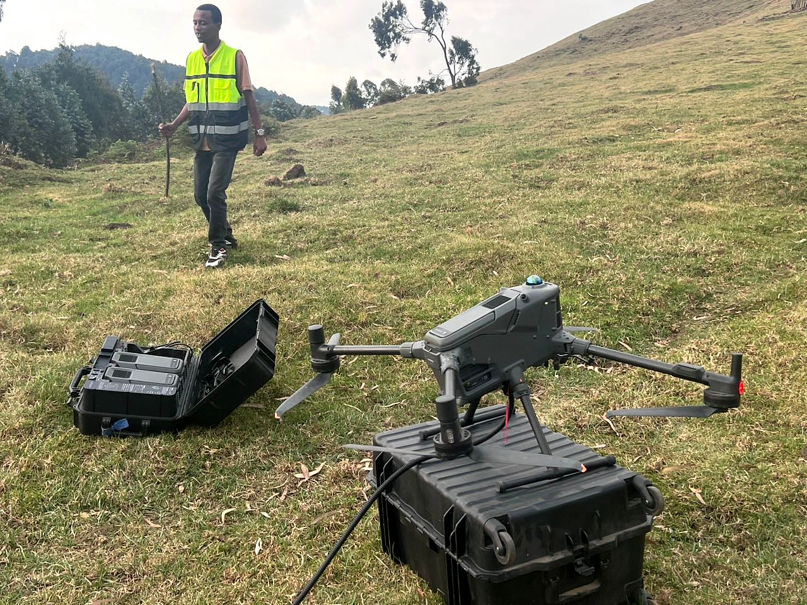
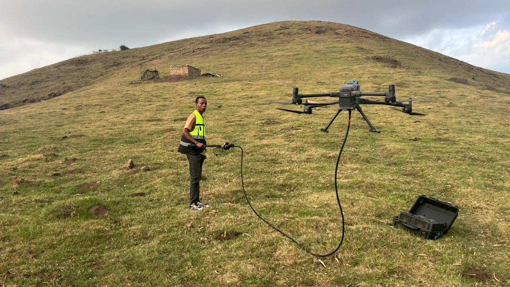
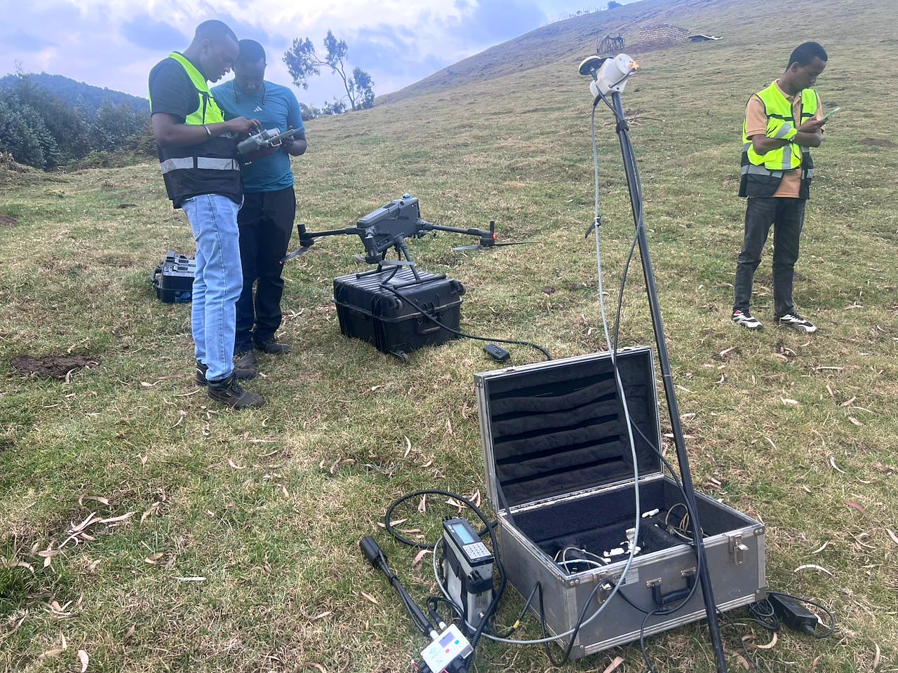
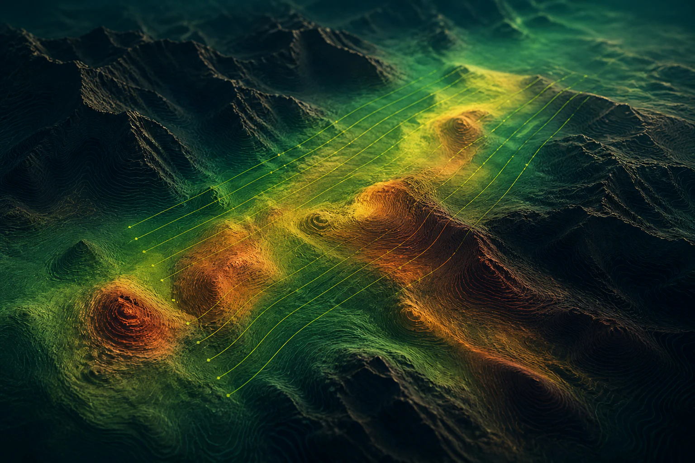

Field note 01 · Kabaya, Rwanda
Three days.
Built for control.
A compact highland campaign combining flight operations, positioning control and magnetic acquisition in demanding terrain.

Fast mobilisation does not mean rushed evidence.
Kabaya's three-day drone magnetic campaign supported pegmatite exploration in Rwanda. The field photographs document the aircraft, sensor configuration and positioning equipment used on the highland deployment.
In uneven terrain, dependable results begin before take-off: payload configuration, sensor separation, launch discipline and a complete time-and-position record all influence what can later be interpreted with confidence.



Representative visualisation · not project data
From disciplined coverage to geological context.
A controlled acquisition record gives the processing team the foundation to separate meaningful spatial response from avoidable survey noise.